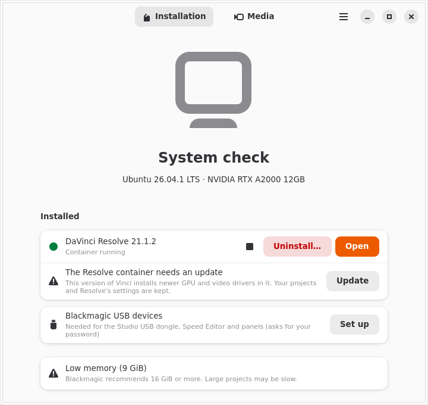
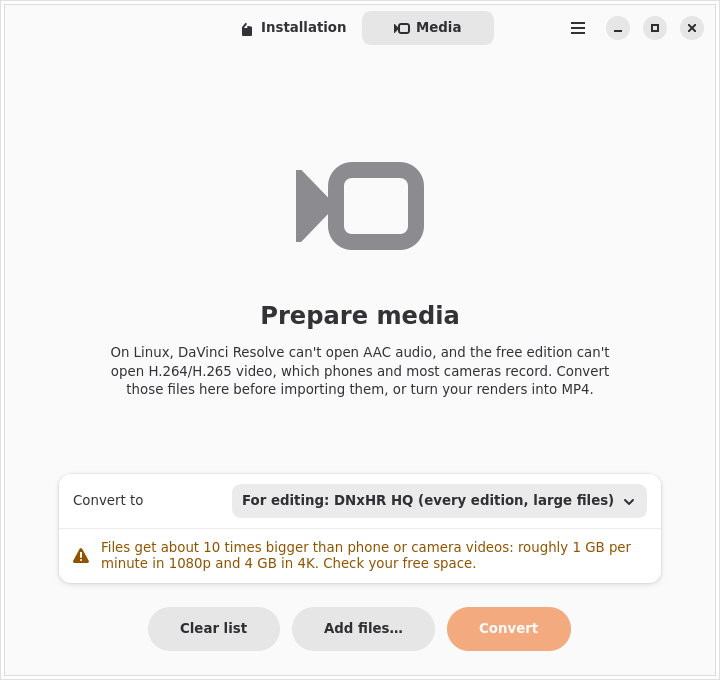
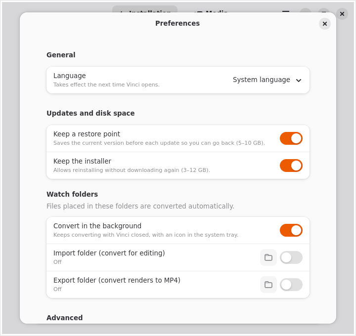

DaVinci Resolve on any Linux distro.
Vinci checks your computer, installs Resolve in an isolated container with full GPU acceleration, and converts the videos Resolve can't open on Linux. No terminal, no changes to your system libraries.
Free and open source (GPL-3.0). x86_64 · Ubuntu, Fedora, Arch, openSUSE, Mint, Pop!_OS, Bazzite and more. Unofficial project, not affiliated with Blackmagic Design.

Three steps
DaVinci Resolve only supports Rocky Linux officially. Vinci gives it the environment it expects, a pinned Ubuntu 24.04 container, so it behaves the same on every distro.
Check
Vinci looks at your GPU, driver, memory and free disk space and explains in plain words what will work and what may not.
Download
Get the free or Studio installer from Blackmagic Design's website. Vinci finds it in your Downloads folder on its own, even while it is still downloading.
Install
One click. Vinci prepares podman and distrobox, builds the container, installs Resolve and adds it to your app menu. Then just open it.
Everything Vinci does
An installer that keeps looking after Resolve once it is installed.
System check
GPU, driver, RAM (8 GiB minimum, 16 GiB recommended) and disk (12 GiB minimum, 40 GiB recommended). It only blocks what certainly won't work; for anything else it warns and lets you continue.
Isolated container
Resolve runs in Ubuntu 24.04 through distrobox and podman, sharing your home folder. Your system libraries are never touched.
Full GPU acceleration
NVIDIA through your system driver (CUDA), AMD through ROCm and Intel through the NEO runtime. Hybrid laptops use the dedicated GPU, and you can switch it in Preferences.
Finds the installer
It detects the Free and Studio zips in Downloads, or opens Blackmagic's page and waits for the file. Versions with known problems are flagged before you install.
Desktop integration
Menu entry with icon, .drp/.drt files open in Resolve, and
Blackmagic's broken utility shortcuts are tidied away.
Sound that works
Audio goes from the container straight to your desktop's PipeWire session, so Resolve plays sound like any other app.
Media conversion
Converts phone and camera footage into formats Resolve opens on Linux, and turns your renders into MP4. GPU-accelerated when available, with automatic CPU fallback.
Watch folders
Drop files in a folder and they are converted in the background, with a tray icon and notifications, even with Vinci closed.
Self-diagnosis and repair
Every time it opens, Vinci checks the container, menu entry, GPU and driver. If something broke, one “Repair” button fixes it.
Restore point
Before each update it saves the working version (5–10 GB), so “Go back to this version” undoes an update that went wrong in seconds.
Updates
It tells you when a new Resolve version is out and updates it in place, along with the container's GPU and video drivers. Projects and settings are always kept.
Free and Studio
Both editions, with license key or USB dongle. Switching edition installs into a new container and offers to remove the old one.
Blackmagic hardware
Safe udev rules for the Studio dongle, Speed Editor and control panels, limited to Blackmagic devices.
Clean uninstall
Removes only what Vinci installed. Your projects stay unless you tick “delete them too”, and podman is kept if other containers use it.
Container terminal
For advanced users: a terminal inside Resolve's container, clearly marked
⬢ vinci-free, and a button to open the installation folder.
Private by design
No telemetry, ever. Optional local logs hide your user name, and a “Copy diagnostic report” button makes bug reports easy.
English and Portuguese
Follows your system language, or pick one in Preferences.
Built to last
Pinned container image and distrobox version, a declarative recipe, a weekly automated check of every external dependency, and offline-first behaviour.
GPU support
Resolve needs a GPU with compute support. Vinci sets up the right stack for yours.
| GPU | How | Status | Notes |
|---|---|---|---|
| NVIDIA | Your system's proprietary driver (CUDA), shared with the container | Tested | Install the proprietary driver on your system first; Vinci tells you if it is missing. |
| AMD | ROCm inside the container | Experimental | RDNA and newer. RDNA1/Vega with a compatibility override. Polaris and older are not supported. |
| Intel | NEO compute runtime (OpenCL) | Experimental | Arc and 12th gen or newer. Blackmagic does not support Intel GPUs on Linux. |
Videos that just open
On Linux, Resolve can't read AAC audio in any edition, and the free edition can't open H.264/H.265, which is what phones and most cameras record. Vinci converts them using the ffmpeg from Ubuntu's repositories inside the container.
| Preset | Use it for |
|---|---|
| DNxHR HQ | Editing in any edition. Large files (about 1 GB per minute in 1080p). |
| ProRes 422 | Editing, when you prefer ProRes. Large files. |
| MPEG-4 (Diolinux preset) | Editing with much smaller files, every audio track kept. Optional size limit. |
| Fix audio only | Studio with NVIDIA: keeps the video and only converts the audio to PCM. |
| MP4 H.264 | Publishing your render (YouTube, web). |
| MP4 H.265 | Publishing with smaller files. |
Pick files in the Media tab, or set an import and an export watch folder in Preferences: anything dropped there is converted automatically into a subfolder, while a tray icon shows progress.

Screenshots
A native GTK 4 and libadwaita app that fits right into GNOME, KDE, Cinnamon and others.

Install Vinci
Vinci ships as an AppImage that runs on any distro with glibc 2.39 or newer. A Flathub release is planned.
- Download the AppImage.
- Make it executable: right-click → Properties → “Allow executing as program”, or:
chmod +x Vinci-*-x86_64.AppImage - Open it. Vinci adds itself to your app menu so you can find it later.
Vinci installs podman (asking for your password) and a private copy of distrobox if your system doesn't have them. Nothing else is installed outside your user folder.
Requirements
- 64-bit PC (x86_64) with a supported NVIDIA, AMD or Intel GPU
- A Linux distro from 2024 or newer (glibc 2.39+)
- 8 GiB of RAM (16 GiB recommended)
- 12 GiB free disk space (40 GiB recommended)
- An internet connection for the first install
- The DaVinci Resolve installer from Blackmagic Design
Tested on Ubuntu and on Fedora with KDE Plasma (Wayland) and Cinnamon. Immutable systems such as Silverblue, Kinoite and Bazzite are detected and handled.
Questions
Does Vinci include DaVinci Resolve?
No. Vinci never downloads, bundles or redistributes Resolve. You download the official installer from Blackmagic Design's website and accept its license, and Vinci installs that file.
Is it free? Does it work with Studio?
Vinci is free software under the GPL-3.0. It installs both the free DaVinci Resolve and DaVinci Resolve Studio; Studio is activated with your own license key or USB dongle.
Will it mess up my system?
No. Resolve and its libraries live in a container. On your system Vinci only installs
podman (if missing, with your confirmation), a private distrobox in
~/.local/share/vinci, a menu entry and, if you ask, udev rules for Blackmagic devices.
The uninstaller removes exactly that.
Where are my projects?
In the same place Resolve always keeps them, in your home folder, which the container shares. Updates and edition switches keep them; uninstalling keeps them unless you choose otherwise.
Does Vinci collect data?
No. It only contacts Blackmagic's public API to learn the latest Resolve version and this repository to read the list of versions with known problems. Logs are off by default and stay on your computer.
Something went wrong. How do I report it?
Use “Copy diagnostic report” in Vinci (it hides your user name) and open an issue on GitHub.